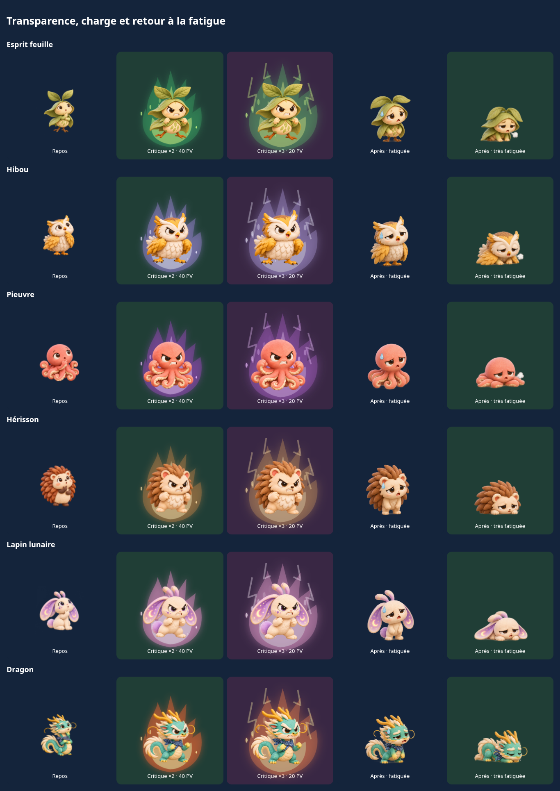
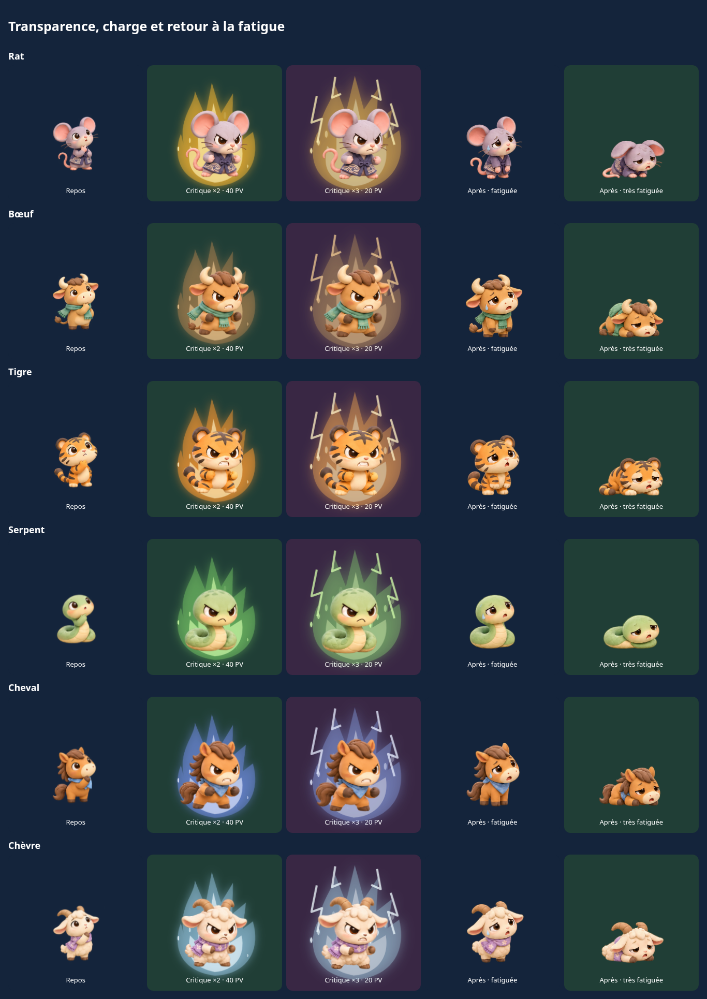
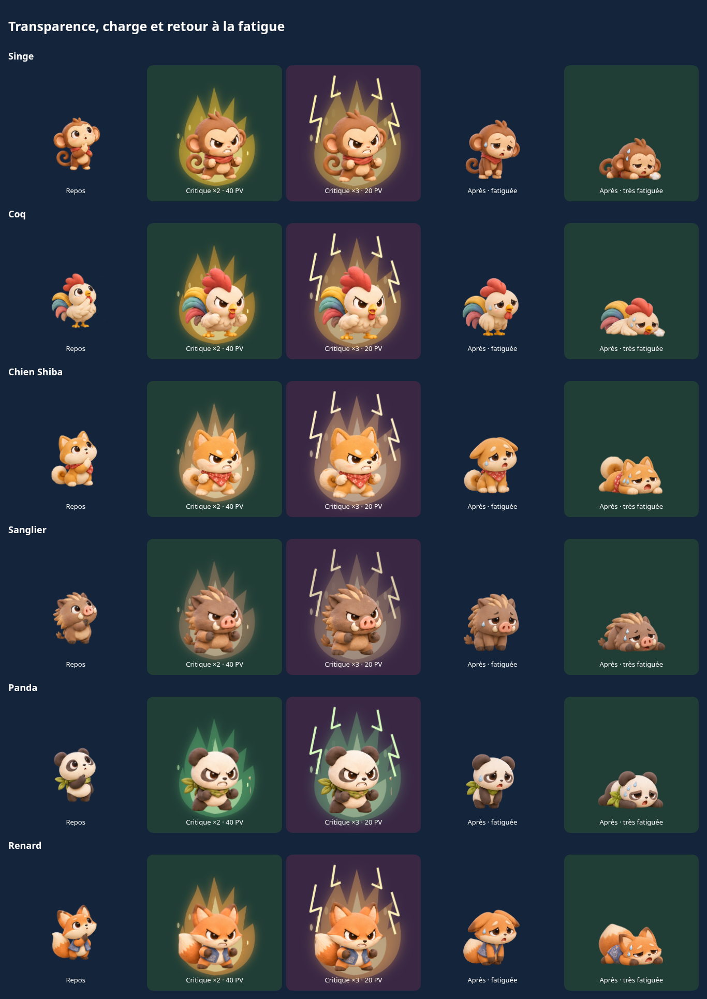
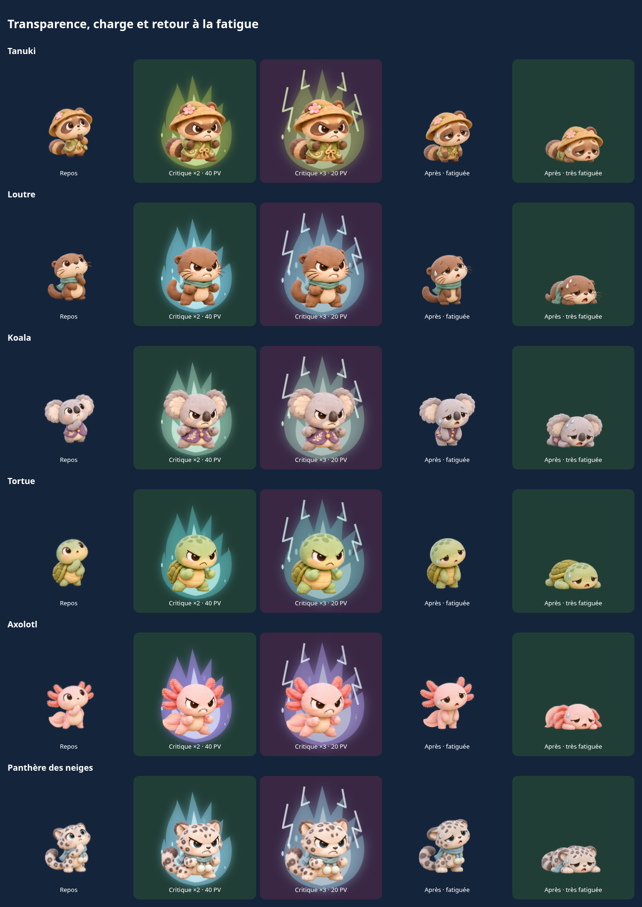
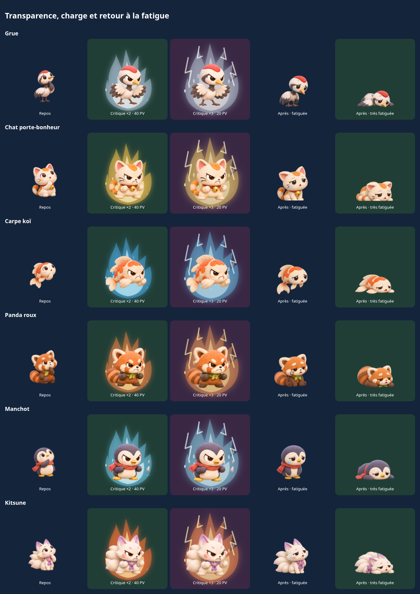
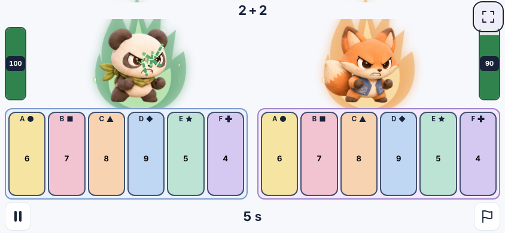
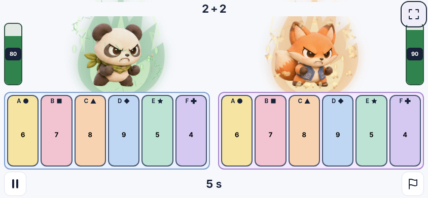
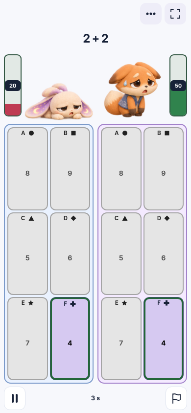

Trente personnages : repos, critique ×2 à 40 PV, critique ×3 à 20 PV, retour aux deux états de fatigue. Les poses énervées et les enveloppes d’énergie utilisent les vraies ressources du jeu.





Captures des parcours de paysage et de cycle de vie : l’enveloppe d’énergie s’ajoute aux particules de signature, puis le Lapin retrouve sa fatigue à 20 points sans fragment dans les coins.


